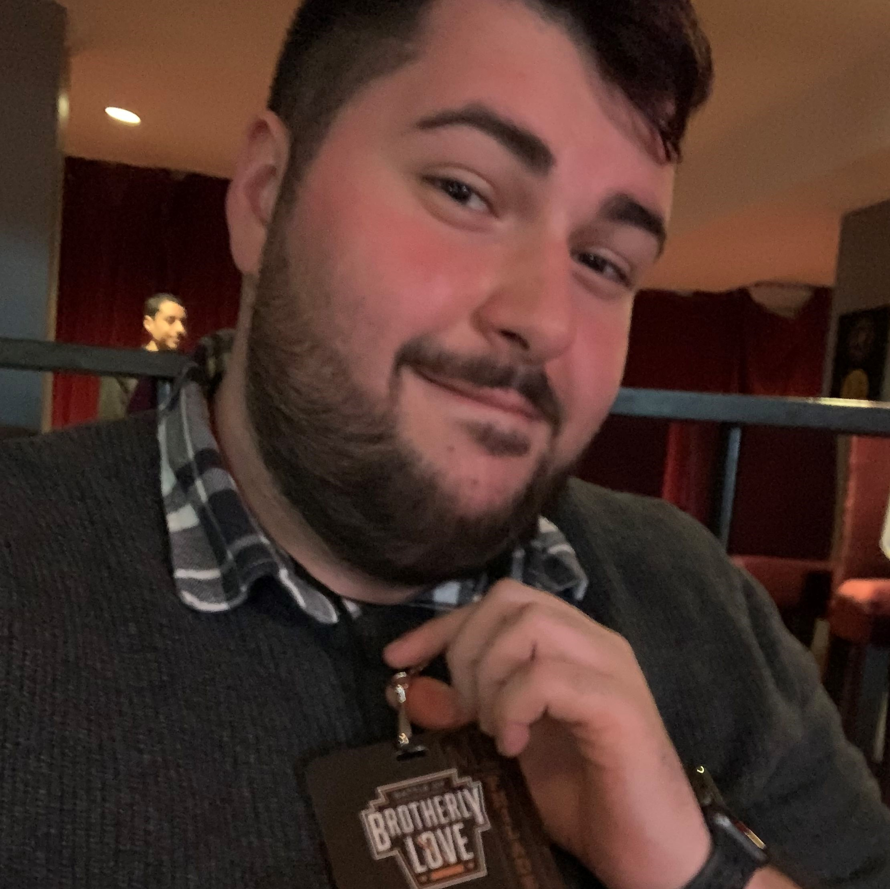

We are Kiki. We are creating an app that curates sexual health resources for the queer community. We are a
platform for queer sexual education, for sexual liberation, for knowledge, for power, joy, freedom, and
connection. Stay tuned for the launch of our app. For now, check out our blog, sign up for our newsletter,
and
follow us on social media.
Kiki was founded in 2020 to address the gap in sexual health resources and education for the LGBTQIA+
community.
This lack of education starts early: one study found that fewer than 5% of LGBT youth have access to
positive
representations of LGBT sexuality in their sex ed classes. This renders us essentially invisible and creates
a
barrier to having safe, pleasurable sex lives. We also face healthcare disparities like doctors who are not
educated in queer sexual health needs that lead to higher rates of STIs and fewer preventative healthcare
visits.
Learning about sexual health and pleasure shouldn’t be daunting. We created Kiki as a way to counter the
cisgender, heterosexual-centered sex ed that is taught in most schools in the US. This platform aims to
create
space for fun, fact-based, and easy-to-understand discussions about sex. For the newly out to the old pros,
for
everything from basic anatomy to butt plugs, Kiki is about inclusion for all. All genders, all sexualities,
all
types of sex and relationships.
Krista White (She, Her, Hers)
Founder
Krista White is a queer, Black writer and actor who decided to take a UX Design class on a whim in 2019.
She
fell in love with her final project, a prototype for the sexual health app that would become Kiki. She
is
thrilled to be working with an incredible team to bring this work to fruition. Based in New York City,
she
loves
sci-fi, baking, and writing fiction.
Blog: aroundtheworldin80plays.com
Twitter: @thekristawhite
Instagram: @thekristawhite
LinkedIn:
https://www.linkedin.com/in/kristawhite3/
Shanice Bailey (She, Her, Hers)
Intern
Shanice is a black queer curator and cultural studies scholar based in the NYC area. As someone who
spent
her formative years covertly scrolling through gURL.com, she's excited to help build this new
sex-positive
digital space. She's passionate about queer history, internet culture, camp, filth, and Dolly Parton,
her
toothless chihuahua.
Instagram: @uvul.a
Nicholas Frattaroli (He, Him, His)

Web Engineer
Nick is a Web Developer based out of NYC. As a proud member of the Bear community He is excited to help
bring sexual health and education to underserved members of the LGBTQ+ community. An avid fan of all
things Nerdy(From ESports to D&D) he is excited to help others by aiding in the creation of a digital
format to disseminate helpful information in one convenient place.
LinkedIn:https://www.linkedin.com/in/nicholas-frattaroli
Github:https://github.com/Nfratt